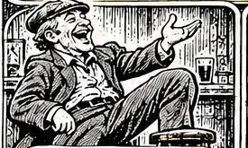
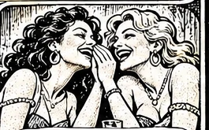

F
Ginideach Bender
🏆 Record:
0
✦ ⭐ ✨
Ar aghaidh linn!
✨ ⭐ ✦
Ceist bhreise · Bonus question
Is the noun masculine or feminine?

Firinscneach

Baininscneach
Continue
Cuir sa
Tuiseal Ginideach
á
é
í
ó
ú
Check
SELECT MODE
Mixed — all three forms
Genitive singular only
Plural only
Genitive plural only
Restart game
Teanglann ↗
Email a comment ✉